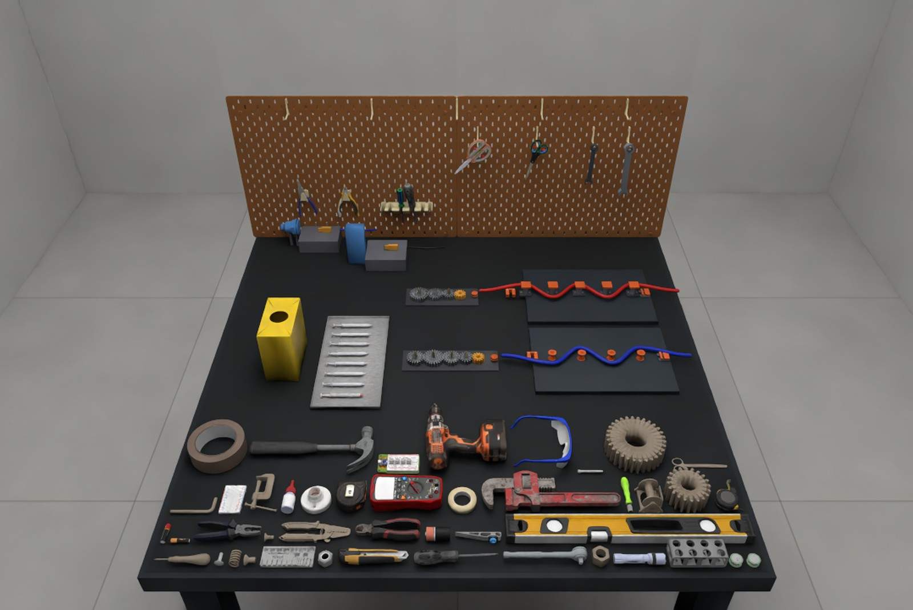

What a Variational Automation task is
A VA task class is a tuple. An instance is a draw from it. Admissibility — not randomness — is what makes the draw meaningful.

- E
- Environmental coordinate frames
- R
- Robot and gripper specification
- A
- Admissible initial assets, each with physical properties and collision mesh
- O
- Space of admissible object configurations
- pO
- Distribution over admissible configurations
- S
- Measurable success condition
An instance τi = {(aj, xj)}j=1..Ni ∈ O names each instantiated asset aj ∈ A and its initial pose xj ∈ SE(3), for all Ni objects and fixtures in the scene. Instances are drawn τi ~ pO under a controlled seed.
Five constraints on admissible variation
- Task invariance. All generated instances remain instances of the same VA task.
- Physical feasibility. Generated configurations satisfy physical constraints on object support, collision and geometric consistency, preventing inadmissible initial scene configurations.
- Robot feasibility. Variations are bounded by the operational workspace of the specified robot. Object and fixture configurations are restricted to reachable regions, avoiding failures caused solely by physically inaccessible configurations.
- Controlled difficulty. Each task has levels of difficulty variation regimes; increasing difficulty progressively broadens what the robot has to solve.
- Skill preservation. Variations are designed so that instances across the same difficulty level can be solved using the same underlying set of manipulation skills, or extensions of them.
The point of the constraint list: O is not defined by unconstrained scene randomization. The variation space and its sampling distribution are designed to represent meaningful changes in the operating conditions of an automation task, where variation is expected rather than anomalous.
Design criteria for agentic robotics benchmarks
A benchmark for agentic robotics has to evaluate task outcomes without prescribing a program representation or agent architecture, so that generated-code, computation-graph, tool-use, learned-policy and hybrid systems can be compared under common conditions. Seven criteria follow.
Relevance to agentic robotics
Support agents that construct, test and revise robot programs from task specifications, with documented robot and tool interfaces and execution feedback for refinement — without prescribing a program representation.
Application relevance
Tasks and variations reflect realistic operating requirements, with results predictive of real-world success, cycle time and intervention needs.
Accessibility and clarity
Environments, task specifications, assets, metrics and variation parameters are publicly available and clearly documented, so independent researchers can reproduce and extend the evaluation.
Controlled diversity
Each task specifies explicit variation axes and difficulty levels rather than relying solely on unconstrained randomization.
Repeatability
Task generation and evaluation use controlled random seeds and standardised success criteria, supporting repeatable experiments and meaningful comparison between methods.
Computational efficiency
Evaluation stays cheap enough to support repeated experimentation, sensitivity analysis and large-scale benchmarking.
Durability
Systematic extensions of variation range and task complexity keep the benchmark informative as systems improve; extensions are versioned to preserve comparability with previously reported results.
What the benchmark ships
Four components hold the suite together: a standardised asset library, representative single- and dual-arm embodiments, a declarative task specification, and multi-physics simulation support.
Asset library
55+ normalised assets
Industrial tools, mechanical components, medical supplies, fixtures, connectors and deformable objects. Assets are normalised in format, scale, appearance and collision geometry to support controlled object and geometric variation across task instances.
Robot embodiment
Single-arm Franka, bimanual YAM
Franka provides a widely adopted platform for reproducible tabletop manipulation; YAM enables tasks requiring coordinated bimanual interaction, particularly deformable-object manipulation.
Task specification
Declarative, extended BDDL
Tasks declare their objects, initial configurations, variations and success conditions. The Behavior Domain Definition Language is extended to represent both rigid and deformable objects as one specification across the full suite.
Physics
Rigid and deformable, unified
NVIDIA Newton provides unified rigid-body and deformable-body dynamics and their interactions, letting the suite span rigid manipulation, contact-rich assembly and insertion, and deformable tasks such as cable routing.


The skill library
VABAR extends the Modular Open Robot Skill Library with reusable procedures for functional-feature manipulation, constrained placement and deformable cable handling. Building on existing perception, grasp generation and collision-aware planning primitives, the extensions provide metric feature localization, source–destination correspondence, in-hand registration and staged feature mating. Cable skills estimate and track ordered 3D centerlines and support anchoring, routing and terminal placement.

Task execution records
Task-level success says whether an execution achieved its objective, not where or why it failed. That matters for agentic robotics, where execution feedback is used to diagnose failures, revise programs and introduce recovery behaviours. VABAR records the evidence needed to relate outcomes to both the program's decisions and the resulting physical interaction.
Fig. 3 — Diagnostic execution flow. Dashed: privileged simulator state. Dotted: physics contact information used for diagnosis.
The four mappings that localise a failure
- ot → ŝt
- Perception or state-estimation failures.
- ŝt → at
- Program-generation, planning, skill-selection or decision failures.
- at → (st+1, Ct)
- Grasping, motion-execution, collision, contact or other physical-interaction failures.
- (st+1, Ct) → et+1
- Task verification, failure detection and recovery triggering.
Why contact is recorded separately from state
Object poses and velocities describe the resulting scene configuration; contact records describe how that configuration arose. A failed placement may leave an object in an incorrect pose, while its contact history reveals whether it collided with a fixture, was supported by another object, or became jammed. VABAR records both so that failure attribution is grounded in the physical execution rather than in task-level success or software error messages alone.